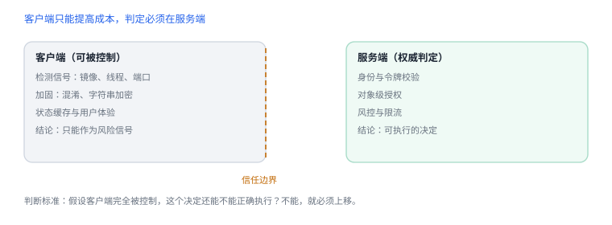

运行时行为与安全边界
动态特性提高灵活性，也把“看得见的调用”变成“看不见的分支”
运行时动态能力让框架更灵活，同时让静态阅读与审计变难。安全设计的关键不是禁用这些能力，而是分清哪些判断可以放在客户端、哪些必须放到权威端。
1. 动态能力与风险
| 能力 | 正常用途 | 被滥用时的表现 |
|---|---|---|
| 反射与类型查询 | 按可用能力分支、插件式注册 | 绕过编译期检查调用未预期行为 |
| 方法交换 | 埋点、测试替身、兼容补丁 | 悄悄改变业务判定或日志 |
| 消息转发 | 代理、多播、桥接 | 把敏感操作藏进转发链 |
| 键值编码 | 配置映射、序列化 | 写入未预期属性、越权改状态 |
表中“被滥用”一列的共同点是：行为不在调用点显式出现。这让代码评审者容易漏看，也让崩溃现场更难解释。
2. 为什么客户端不能作为信任根
客户端运行在用户控制的设备上。任何检测、加密密钥、隐藏逻辑都可能被观察或改变。因此：
- 越狱/调试检测是信号，可用于风险评分与产品策略，不能作为授权依据。
- 把关键判定放在客户端，只能提高攻击成本，不能形成边界。
- 真正需要保护的资源应在服务端按身份与上下文判定。
判断标准
问一句：如果客户端完全被控制，这个决定还能不能被正确执行？答案是否，就必须上移到服务端。
问一句：如果客户端完全被控制，这个决定还能不能被正确执行？答案是否，就必须上移到服务端。

3. 让动态行为可审计
- 限制动态调用的作用范围：交换只发生在自有类、启动早期、可枚举的位置。
- 把“为什么需要动态”写进代码注释与设计文档，避免后来者复制到不该用的地方。
- 为交换与转发路径补测试，覆盖“实现不存在”“返回类型不符”“递归转发”等失败形态。
- 在日志里记录动态路径的命中，便于线上排查（注意不含敏感数据）。
4. 常见错误形态
- 用 respondsToSelector 代替契约：能响应不代表语义正确，可选协议方法尤其如此。
- 将返回值类型写错：动态调用时类型编码不匹配会得到错误结果或崩溃。
- 递归转发：转发目标又把消息转回来，形成死循环。
- 依赖未公开布局：升级系统或工具链后行为改变。
5. 可验证实验
交换自有方法并观察影响范围
static IMP gOriginal;
static void Swizzled(id self, SEL _cmd) {
NSLog(@"before %@", NSStringFromSelector(_cmd));
((void (*)(id, SEL))gOriginal)(self, _cmd);
}
gOriginal = class_getMethodImplementation([MyService class], @selector(run));
method_setImplementation(class_getInstanceMethod([MyService class], @selector(run)),
(IMP)Swizzled);- 在两个不同调用点调用同一方法，确认交换对两者都生效。
- 实现转发并在其中打印调用链，观察“未实现”到“被处理”的过程。
- 用键值编码访问不存在的键，记录异常类型，评估线上是否需要防护。
6. 设计结论
- 动态能力用于框架与兼容层，不用于承载安全判定。
- 审计清单应包含：交换点、转发实现、键值编码入口、按字符串构造的选择子。
- 所有敏感操作在服务端二次校验，客户端状态只作为提示。
7. 动态能力与可观测信号
| 能力 | 正常用途 | 可观测信号 |
|---|---|---|
| 方法交换 | 埋点、测试替身 | 实现地址与符号不一致 |
| 消息转发 | 代理、多播 | 调用栈出现转发帧 |
| 键值编码 | 配置映射 | 访问未声明键时抛异常 |
信号不等于授权
这些信号可用于风险评分与日志，但业务判定必须在服务端完成。
这些信号可用于风险评分与日志，但业务判定必须在服务端完成。
8. 一次真实排查记录：交换后状态错乱
- 现象：埋点上线后，个别页面数据串了。
- 先怀疑时序：交换在类未初始化时执行，或与其他交换互相覆盖。
- 查顺序：打印各实现地址，确认最终生效的是哪一个。
- 收敛：只保留一处交换，其余改为显式调用。
- 结论与限制：记录“多份交换互相覆盖”，并注明结论只对该初始化顺序成立。
9. 自测
- 越狱检测为什么适合作为信号而不适合作为授权条件？
- 方法交换给代码审计带来哪两类困难？
- 消息转发可能出现哪些失败形态？如何测试？